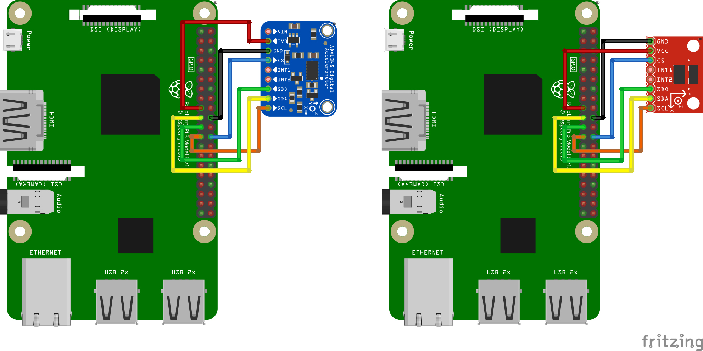

Mesurer la résonance¶
Klipper prend en charge l’accéléromètre ADXL345, qui peut être utilisé pour mesurer les fréquences de résonance de l’imprimante sur différents axes, et le réglage automatique input shapers pour limiter les résonances. Notez que l’utilisation de l’ADXL345 nécessite un peu de soudure et de sertissage. L’ADXL345 peut être connecté directement à un Raspberry Pi, ou à une interface SPI d’une carte MCU (qui doit être rapide).
Lors de l’approvisionnement en ADXL345, sachez qu’il existe une variété de conceptions de cartes PCB différentes et différents clones. Assurez-vous que la carte prend en charge le mode SPI (un petit nombre de cartes semble être configurée en dur pour I2C avec SDO raccordé au GND) et, si elle doit être connectée à un microcontrôleur d’imprimante 5V, qu’elle dispose d’un régulateur de tension et d’un décalage de niveau.
Instructions d’installation¶
Câblage¶
Un câble Ethernet à paires torsadées blindées (cat5e ou supérieur) est recommandé pour la qualité du signal sur une longue distance. Si vous rencontrez toujours des problèmes de qualité du signal (erreurs SPI/I2C), raccourcissez le câble.
Connectez le blindage du câble Ethernet à la terre de la carte contrôleur/RPI.
Vérifiez votre câblage avant de mettre sous tension pour éviter d'endommager votre MCU/Raspberry Pi ou l'accéléromètre ou les deux.
Accéléromètres SPI¶
Suggestions d'utilisation des paires torsadées :
GND+MISO
3.3V+MOSI
SCLK+CS
ADXL345¶
Remarque : de nombreux microcontrôleurs fonctionnent avec un ADXL345 en mode SPI (par exemple, Pi Pico), le câblage et la configuration varient en fonction de votre carte ADXL et des broches disponibles. sur votre MCU
Vous devez connecter ADXL345 à votre Raspberry Pi via SPI. Notez que la connexion I2C, suggérée par la documentation ADXL345, a un débit trop faible et ne fonctionnera pas. Le schéma de connexion recommandé :
| Brochage de l'ADXL345 | Brochage du RPI | Nom des broches du RPI |
|---|---|---|
| 3,3 V (ou VCC) | 01 | Alimentation 3.3v continu |
| GND | 06 | Terre |
| CS | 24 | GPIO08 (SPI0_CE0_N) |
| SDO | 21 | GPIO09 (SPI0_MISO) |
| SDA | 19 | GPIO10 (SPI0_MOSI) |
| SCL | 23 | GPIO11 (SPI0_SCLK) |
Schémas de câblage de Fritzing pour certaines des cartes ADXL345 :

Accéléromètres I2C¶
Suggestions d'utilisation des paires torsadées :
3.3V+SDA
GND+SCL
MPU-9250/MPU-9255/MPU-6515/MPU-6050/MPU-6500¶
Les alternatives à l'ADXL345 sont MPU-9250, MPU-9255, MPU-6515, MPU-6050 ou MPU-6500. Ces accéléromètres ont été testés pour fonctionner sur I2C avec un RPi ou un RP2040(pico) à 400kbaud.
Schéma de connexion recommandé pour I2C sur le Raspberry Pi :
| brochage du MPU-9250 | Brochage du RPI | Nom des broches du RPI |
|---|---|---|
| VCC | 01 | Alimentation 3.3v continu |
| GND | 09 | Terre |
| SDA | 03 | GPIO02 (SDA1) |
| SCL | 05 | GPIO03 (SCL1) |

Schéma de connexion recommandé pour I2C(i2c0a) connecté au RP2040 :
| brochage du MPU-9250 | Broche du RP2040 | Nom des broches du RPI |
|---|---|---|
| VCC | 39 | 3v3 |
| GND | 38 | Terre |
| SDA | 01 | GP0 (I2C0 SDA) |
| SCL | 02 | GP1 (I2C0 SCL) |

Montage de l’accéléromètre¶
L’accéléromètre doit être fixé sur la tête d'impression. Il faut concevoir un support approprié qui s’adapte à l'imprimante 3D. Il est préférable d’aligner les axes de l’accéléromètre avec les axes de l’imprimante (mais ce n'est pas obligatoire - c’est-à-dire pas besoin d’aligner l’axe X avec X et ainsi de suite - cela devrait être correct même si l’axe Z de l’accéléromètre est l’axe X de l’imprimante, etc.).
Exemple de montage d’ADXL345 sur le SmartEffector :

Notez que sur une imprimante cartésienne, il faut concevoir 2 supports : un pour la tête et un pour le lit, et exécuter les mesures deux fois. Voir la section correspondante pour plus de détails.
Attention: assurez-vous que l’accéléromètre et les vis qui le maintiennent en place ne touchent aucune partie métallique de l’imprimante. Fondamentalement, le support doit être conçu de manière à assurer l’isolation électrique de l’accéléromètre du châssis de l’imprimante. Ne pas s’assurer de cette isolation peut créer une boucle de terre dans le système qui peut endommager l’électronique.
Installation logicielle¶
Notez que les mesures de résonance et l’auto-étalonnage de l'input shaper nécessitent des dépendances logicielles supplémentaires non installées par défaut. Tout d’abord, exécutez sur votre Raspberry Pi les commandes suivantes :
sudo apt update
sudo apt install python3-numpy python3-matplotlib libatlas-base-dev
Ensuite, pour installer NumPy dans l’environnement Klipper, exécutez la commande :
~/klippy-env/bin/pip install -v numpy
Selon les performances du processeur, cette opération peut prendre jusqu’à 20 minutes. Soyez patient et attendez la fin de l’installation. Dans certains cas, si la carte a trop peu de mémoire, l’installation peut échouer et vous devrez activer le fichier d’échange.
Vérifiez et suivez les instructions dans le document RPi Microcontroller pour configurer le « linux mcu » sur le Raspberry Pi.
Configurer l'ADXL345 avec le RPi¶
Assurez-vous que le pilote SPI Linux est activé en exécutant sudo raspi-config et en activant SPI dans le menu « Options d’interface ».
Ajoutez les lignes suivantes au fichier printer.cfg :
[mcu rpi]
serial: /tmp/klipper_host_mcu
[adxl345]
cs_pin: rpi:None
[resonance_tester]
accel_chip: adxl345
probe_points:
100, 100, 20 # valeur exemple
Il est conseillé de commencer par 1 point de test, au milieu du lit d’impression, légèrement au-dessus.
Configurer les séries MPU-6000/9000 avec le RPi¶
Assurez-vous que le pilote Linux I2C est activé et que le débit en bauds est défini sur 400 000 (voir la section Activation d'I2C pour plus de détails). Ensuite, ajoutez ce qui suit au fichier printer.cfg :
[mcu rpi]
serial: /tmp/klipper_host_mcu
[mpu9250]
i2c_mcu: rpi
i2c_bus: i2c.1
[resonance_tester]
accel_chip: mpu9250
probe_points:
100, 100, 20 # valeurs exemple
Configurer les séries MPU-6000/9000 avec le PICO¶
Sur le PICO I2C est réglé sur 400000 par défaut. Ajoutez simplement ce qui suit au fichier printer.cfg :
[mcu pico]
serial : /dev/serial/by-id/<le serial id du PICO>
[mpu9250]
i2c_mcu : pico
i2c_bus : i2c1a
[resonance_tester]
accel_chip : mpu9250
probe_points :
100, 100, 20 # un exemple
[static_digital_output pico_3V3pwm] # Amélioration de la stabilité de l'alimentation
pin : pico :gpio23
Redémarrez Klipper avec la commande RESTART.
Mesurer les résonances¶
Vérification de la configuration¶
Vous pouvez maintenant tester la connexion.
- Pour les imprimntes non cartésiennes (celles avec une seul accéléromètre), dans Octoprint, entrez
ACCELEROMETER_QUERY - Pour les imprimante cartésiennes (plus d’un accéléromètre), entrez
ACCELEROMETER_QUERY CHIP=<chip>où<chip>est le nom de la puce tel qu’il a été entré, par exempleCHIP=bed(voir : bed-slinger) faites-le pour tous les accéléromètre installés.
Vous devriez voir les mesures actuelles de l’accéléromètre, y compris l’accélération en chute libre.
Recv: // adxl345 values (x, y, z) : 470.719200, 941.438400, 9728.196800
Si vous obtenez une erreur comme Invalid adxl345 id (got xx vs e5), où xx est un autre ID, cela indique un problème de connexion avec ADXL345, ou de capteur défectueux. Vérifiez l’alimentation, le câblage (correspondance avec les schémas, aucun fil coupé ou desserré, etc.) et la qualité de la soudure.
Si vous utilisez un accéléromètre de la série MPU-6000/9000 et qu'il s'affiche comme "mpu-unknown", utilisez-le avec prudence ! Ce sont probablement des puces reconditionnées !
Ensuite, essayez d’exécuter MEASURE_AXES_NOISE dans Octoprint, vous devriez obtenir des chiffres de base pour le bruit de fond l’accéléromètre sur les axes (qui devrait se situer entre 1 et 100). Un bruit de fond d’axe trop élevé (par exemple 1000 et plus) peut indiquer des problèmes de capteur, des problèmes de puissance ou des ventilateurs déséquilibrés amenant trop de vibrations sur l'imprimante 3D.
Mesurer les résonances¶
Vous pouvez maintenant exécuter des tests réels. Exécutez la commande suivante :
TEST_RESONANCES AXIS=X
Notez que cela créera des vibrations sur l’axe X. Ce test désactivera les valeurs l'input shaper déjà paramétrées. Le test de résonnance ne peut pas être fait avec l'input shaper' déjà activé.
Attention ! Observez l’imprimante la première fois, pour vous assurer que les vibrations ne deviennent pas trop violentes (la commande M112 peut être utilisée pour interrompre le test en cas d’urgence - espérons que cela n’arrivera pas à cela). Si les vibrations deviennent trop fortes, vous pouvez essayer de spécifier une valeur inférieure à la valeur par défaut pour le paramètre accel_per_hz dans la section [resonance_tester].
[resonance_tester]
accel_chip: adxl345
accel_per_hz: 50 # default is 75
probe_points: ...
Si cela fonctionne pour l’axe X, exécutez également la commande pour l’axe Y :
TEST_RESONANCES AXIS=Y
Cela générera 2 fichiers CSV (/tmp/resonances_x_*.csv et /tmp/resonances_y_*.csv). Ces fichiers peuvent être traités avec le script autonome sur un Raspberry Pi. Pour ce faire, exécutez les commandes suivantes :
~/klipper/scripts/calibrate_shaper.py /tmp/resonances_x_*.csv -o /tmp/shaper_calibrate_x.png
~/klipper/scripts/calibrate_shaper.py /tmp/resonances_y_*.csv -o /tmp/shaper_calibrate_y.png
Ce script générera les graphiques /tmp/shaper_calibrate_x.png et /tmp/shaper_calibrate_y.png avec les réponses en fréquence. Vous obtiendrez également les fréquences suggérées pour chaque mode d'input shaper', ainsi que la valeur recommandée pour votre configuration. Par exemple :

Fitted shaper 'zv' frequency = 34.4 Hz (vibrations = 4.0%, smoothing ~= 0.132)
To avoid too much smoothing with 'zv', suggested max_accel <= 4500 mm/sec^2
Fitted shaper 'mzv' frequency = 34.6 Hz (vibrations = 0.0%, smoothing ~= 0.170)
To avoid too much smoothing with 'mzv', suggested max_accel <= 3500 mm/sec^2
Fitted shaper 'ei' frequency = 41.4 Hz (vibrations = 0.0%, smoothing ~= 0.188)
To avoid too much smoothing with 'ei', suggested max_accel <= 3200 mm/sec^2
Fitted shaper '2hump_ei' frequency = 51.8 Hz (vibrations = 0.0%, smoothing ~= 0.201)
To avoid too much smoothing with '2hump_ei', suggested max_accel <= 3000 mm/sec^2
Fitted shaper '3hump_ei' frequency = 61.8 Hz (vibrations = 0.0%, smoothing ~= 0.215)
To avoid too much smoothing with '3hump_ei', suggested max_accel <= 2800 mm/sec^2
Recommended shaper is mzv @ 34.6 Hz
La configuration suggérée peut être ajoutée à la section [input_shaper] de printer.cfg, par exemple :
[input_shaper]
shaper_freq_x: ...
shaper_type_x: ...
shaper_freq_y: 34.6
shaper_type_y: mzv
[printer]
max_accel: 3000 # Ne devrait pas dépasser les valeurs estimées d'accélération calculées pour les axes X et Y
Ou vous pouvez choisir vous-même une autre configuration en fonction des graphiques générés : les pics de densité spectrale de puissance sur les graphiques correspondent aux fréquences de résonance de l’imprimante.
Notez que vous pouvez également exécuter l’autoétalonnage de l'input shaper' à partir de Klipper directement, ce qui peut être pratique, par exemple, pour l'input shaper' recalibration.
Imprimantes cartésiennes¶
Si votre imprimante est une imprimante cartésienne, vous devrez changer l’emplacement de l’accéléromètre entre les mesures pour les axes X et Y : mesurez les résonances de l’axe X avec l’accéléromètre fixé à la tête d’outil et les résonances de l’axe Y - au lit (la configuration habituelle des imprimantes cartésiennes).
Cependant, vous pouvez également connecter les deux accéléromètres simultanément, bien qu'ils doivent être connectés à des cartes différentes (par exemple, à une carte RPi et MCU d'imprimante), ou à deux interfaces SPI physiques différentes sur la même carte (rarement disponibles). Ensuite, ils peuvent être configurés de la manière suivante :
[adxl345 hotend]
# En considérant que l'adxl de la tête connectée au RPI
cs_pin: rpi:None
[adxl345 bed]
# En considérant que l'adxl du lit est connecté au MCU
cs_pin: ... # Printer board SPI chip select (CS) pin
[resonance_tester]
# En considérant un montage standard pour une imprimante cartésienne
accel_chip_x: adxl345 hotend
accel_chip_y: adxl345 bed
probe_points: ...
Ensuite, les commandes TEST_RESONANCES AXIS=X et TEST_RESONANCES AXIS=Y utiliseront le bon accéléromètre pour chaque axe.
Lissage maximum¶
Gardez à l'esprit que l'input shaper peut créer un lissage sur certaines parties de l'impression. Le réglage automatique du input shaper effectué par le script calibrate_shaper.py ou la commande SHAPER_CALIBRATE essaie de limiter le lissage, mais il essaie aussi de minimiser les vibrations résultantes. Cela peut conduire parfois, à un choix peu optimisé de la fréquence du input shaper ou peut-être préférez-vous simplement avoir moins de lissage dans certaines parties de l'impression au détriment des vibrations restantes. Dans ces cas, vous pouvez demander de limiter le lissage maximal à partir du input haper.
Regardons les résultats suivants du réglage automatique :

Fitted shaper 'zv' frequency = 57.8 Hz (vibrations = 20.3%, smoothing ~= 0.053)
To avoid too much smoothing with 'zv', suggested max_accel <= 13000 mm/sec^2
Fitted shaper 'mzv' frequency = 34.8 Hz (vibrations = 3.6%, smoothing ~= 0.168)
To avoid too much smoothing with 'mzv', suggested max_accel <= 3600 mm/sec^2
Fitted shaper 'ei' frequency = 48.8 Hz (vibrations = 4.9%, smoothing ~= 0.135)
To avoid too much smoothing with 'ei', suggested max_accel <= 4400 mm/sec^2
Fitted shaper '2hump_ei' frequency = 45.2 Hz (vibrations = 0.1%, smoothing ~= 0.264)
To avoid too much smoothing with '2hump_ei', suggested max_accel <= 2200 mm/sec^2
Fitted shaper '3hump_ei' frequency = 48.0 Hz (vibrations = 0.0%, smoothing ~= 0.356)
To avoid too much smoothing with '3hump_ei', suggested max_accel <= 1500 mm/sec^2
Recommended shaper is 2hump_ei @ 45.2 Hz
Notez que les valeurs rapportées smoothing sont des valeurs projetées abstraites. Ces valeurs peuvent être utilisées pour comparer différentes configurations : plus la valeur est élevée, plus l'input shaper créera de lissage. Cependant, ces scores de lissage ne représentent aucune mesure réelle du lissage, car le lissage réel dépend des paramètres max_accel et square_corner_velocity. Par conséquent, vous devez faire des impressions de test pour voir exactement le lissage crée par la configuration choisie.
Dans l'exemple ci-dessus, les paramètres de mise en forme suggérés ne sont pas mauvais, mais que se passe-t-il si vous souhaitez obtenir moins de lissage sur l'axe X ? Vous pouvez essayer de limiter le lissage maximal du shaper à l'aide de la commande suivante :
~/klipper/scripts/calibrate_shaper.py /tmp/resonances_x_*.csv -o /tmp/shaper_calibrate_x.png --max_smoothing=0.2
ce qui limite le lissage à un score de 0,2. Vous pouvez maintenant obtenir le résultat suivant :

Fitted shaper 'zv' frequency = 55.4 Hz (vibrations = 19.7%, smoothing ~= 0.057)
To avoid too much smoothing with 'zv', suggested max_accel <= 12000 mm/sec^2
Fitted shaper 'mzv' frequency = 34.6 Hz (vibrations = 3.6%, smoothing ~= 0.170)
To avoid too much smoothing with 'mzv', suggested max_accel <= 3500 mm/sec^2
Fitted shaper 'ei' frequency = 48.2 Hz (vibrations = 4.8%, smoothing ~= 0.139)
To avoid too much smoothing with 'ei', suggested max_accel <= 4300 mm/sec^2
Fitted shaper '2hump_ei' frequency = 52.0 Hz (vibrations = 2.7%, smoothing ~= 0.200)
To avoid too much smoothing with '2hump_ei', suggested max_accel <= 3000 mm/sec^2
Fitted shaper '3hump_ei' frequency = 72.6 Hz (vibrations = 1.4%, smoothing ~= 0.155)
To avoid too much smoothing with '3hump_ei', suggested max_accel <= 3900 mm/sec^2
Recommended shaper is 3hump_ei @ 72.6 Hz
Si vous comparez avec les paramètres suggérés précédemment, les vibrations sont un peu plus importantes, mais le lissage est nettement plus faible qu'auparavant, ce qui permet une accélération maximale plus importante.
Lorsque vous choisissez le paramètre max_smoothing, vous pouvez utiliser une approche par essais et erreurs. Essayez quelques valeurs différentes et voyez quels résultats vous obtenez. Notez que le lissage réel produit par le modeleur d'entrée dépend principalement de la fréquence de résonance la plus basse de l'imprimante : plus la fréquence de la résonance la plus basse est élevée, plus le lissage est petit. Par conséquent, si vous demandez au script de trouver une configuration de l'input shaper avec un lissage irréaliste, cela se fera au détriment d'une résonnance accrue aux fréquences les plus basses (qui sont, généralement, plus visibles dans les impressions). Donc, vérifiez toujours les vibrations restantes projetées signalées par le script et assurez-vous qu'elles ne sont pas trop élevées.
Notez que si vous avez choisi une bonne valeur max_smoothing pour vos deux axes, vous pouvez la stocker dans printer.cfg comme
[resonance_tester]
accel_chip: ...
probe_points: ...
max_smoothing: 0.25 # valeur exemple
Ensuite, si vous réexécutez le réglage automatique de l'input shaper à l'aide de la commande SHAPER_CALIBRATE, c'est la valeur stockée max_smoothing qui sera prise comme référence.
Sélection de max_accel¶
Étant donné que l'input shaper peut créer un certain lissage dans les pièces, en particulier à des accélérations élevées, vous devrez toujours choisir la valeur max_accel qui ne crée pas trop de lissage dans les pièces imprimées. Un script d'étalonnage fournit une estimation du paramètre max_accel qui ne devrait pas créer trop de lissage. Notez que le max_accel tel qu'affiché par le script de calibrage n'est qu'un maximum théorique auquel l'input shaper est encore capable de travailler sans produire trop de lissage. Il ne s'agit en aucun cas d'une recommandation pour définir cette accélération sur vos l'impression. L'accélération maximale que votre imprimante est capable de supporter dépend de ses propriétés mécaniques et du couple maximal des moteurs pas à pas utilisés. Par conséquent, il est suggéré de définir un max_accel dans la section [printer] qui ne dépasse pas les valeurs estimées pour les axes X et Y, probablement avec une marge de sécurité.
Vous pouvez également suivre la partie this du guide de réglage de l'input shaper et imprimer un modèle de test pour choisir le paramètre max_accel de manière expérimentale.
Même remarque pour l'input shaper auto-calibration avec la commande SHAPER_CALIBRATE : il faut encore choisir la bonne valeur max_accel après l'auto-calibrage et les limites d'accélération suggérées ne seront pas appliquées automatiquement.
Si vous effectuez un réétalonnage du shaper et que le lissage signalé pour la configuration de shaper suggérée est presque le même que celui que vous avez obtenu lors du calibrage précédent, cette étape peut être ignorée.
Test des axes personnalisés¶
la commande TEST_RESONANCES prend en charge les axes personnalisés. Bien que cela ne soit pas vraiment utile pour l’étalonnage des input shaper, cela peut être utilisé pour étudier en profondeur les résonances de l’imprimante et vérifier, par exemple, la tension de la courroie.
Pour vérifier la tension de la courroie sur les imprimantes CoreXY, exécutez
TEST_RESONANCES AXIS=1,1 OUTPUT=raw_data
TEST_RESONANCES AXIS=1,-1 OUTPUT=raw_data
et utilisez graph_accelerometer.py pour traiter les fichiers générés.
~/klipper/scripts/graph_accelerometer.py -c /tmp/raw_data_axis*.csv -o /tmp/resonances.png
qui générera /tmp/résonances.png en comparant les résonances.
Pour les imprimantes Delta avec le placement des tours par défaut (tour A ~= 210 degrés, B ~= 330 degrés et C ~= 90 degrés), exécutez
TEST_RESONANCES AXIS=0,1 OUTPUT=raw_data
TEST_RESONANCES AXIS=-0.866025404,-0.5 OUTPUT=raw_data
TEST_RESONANCES AXIS=0.866025404,-0.5 OUTPUT=raw_data
puis utilisez la même commande
~/klipper/scripts/graph_accelerometer.py -c /tmp/raw_data_axis*.csv -o /tmp/resonances.png
pour générer le fichier de comparaison des résonnances /tmp/résonances.png.
Calibrage automatique de l'input shaper¶
En plus de choisir manuellement les paramètres appropriés pour la fonction d'input shaper, il est également possible d'exécuter le réglage automatique pour l'input shaper directement à partir de Klipper. Exécutez la commande suivante via le terminal Octoprint :
SHAPER_CALIBRATE
Cela exécutera le test complet pour les deux axes et générera la sortie csv (/tmp/calibration_data_*.csv par défaut) pour la réponse en fréquence et les input shaper suggérés. Vous obtiendrez également les fréquences suggérées pour chaque input shaper, ainsi que l'input shaper recommandé pour votre configuration, sur la console Octoprint. Par exemple :
Calculating the best input shaper parameters for y axis
Fitted shaper 'zv' frequency = 39.0 Hz (vibrations = 13.2%, smoothing ~= 0.105)
To avoid too much smoothing with 'zv', suggested max_accel <= 5900 mm/sec^2
Fitted shaper 'mzv' frequency = 36.8 Hz (vibrations = 1.7%, smoothing ~= 0.150)
To avoid too much smoothing with 'mzv', suggested max_accel <= 4000 mm/sec^2
Fitted shaper 'ei' frequency = 36.6 Hz (vibrations = 2.2%, smoothing ~= 0.240)
To avoid too much smoothing with 'ei', suggested max_accel <= 2500 mm/sec^2
Fitted shaper '2hump_ei' frequency = 48.0 Hz (vibrations = 0.0%, smoothing ~= 0.234)
To avoid too much smoothing with '2hump_ei', suggested max_accel <= 2500 mm/sec^2
Fitted shaper '3hump_ei' frequency = 59.0 Hz (vibrations = 0.0%, smoothing ~= 0.235)
To avoid too much smoothing with '3hump_ei', suggested max_accel <= 2500 mm/sec^2
Recommended shaper_type_y = mzv, shaper_freq_y = 36.8 Hz
Si vous êtes d'accord avec les paramètres suggérés, vous pouvez exécuter SAVE_CONFIG maintenant pour les enregistrer et redémarrer Klipper. Notez que cela ne mettra pas à jour la valeur max_accel dans la section [printer]. Vous devez le mettre à jour manuellement en suivant les recommandations de la section Selecting max_accel.
Si votre imprimante est une imprimante cartésienne, vous pouvez spécifier l'axe à tester, afin de pouvoir modifier le point de montage de l'accéléromètre entre les tests (par défaut, le test est effectué pour les deux axes) :
SHAPER_CALIBRATE AXIS=Y
Vous pouvez exécuter SAVE_CONFIG deux fois - après avoir calibré chaque axe.
Cependant, si vous avez connecté deux accéléromètres simultanément, vous pouvez exécutez simplement SHAPER_CALIBRATE sans spécifier d'axe pour calibrer l'input shaper pour les deux axes en une seule fois.
Réétalonnage de l'input shaper¶
La commande SHAPER_CALIBRATE peut également être utilisée pour recalibrer l'input shaper ultérieurement, en particulier si des modifications de l'imprimante pouvant affecter sa cinématique sont apportées. On peut soit relancer l'étalonnage complet à l'aide de la commande SHAPER_CALIBRATE, soit restreindre l'auto-étalonnage à un seul axe en fournissant le paramètre AXIS=, comme
SHAPER_CALIBRATE AXIS=X
Attention ! Il est déconseillé d'exécuter l'autocalibrage de l'input shaper très fréquemment (par exemple, avant chaque impression ou tous les jours). Afin de déterminer les fréquences de résonance, l'autocalibrage crée des vibrations intenses sur chacun des axes. Les imprimantes 3D ne sont pas conçues pour résister à une exposition prolongée à des vibrations proches des fréquences de résonance. Cela pourrait augmenter l'usure des composants de l'imprimante et réduire leur durée de vie. Il existe également un risque accru que certaines pièces se dévissent ou se desserrent. Vérifiez toujours que toutes les pièces de l'imprimante (y compris celles qui ne peuvent normalement pas bouger) sont solidement fixées en place après chaque réglage automatique.
De plus, en raison d'un certain bruit dans les mesures, il est possible que les résultats de réglage soient légèrement différents d'un calibrage à l'autre. Ce bruit ne devrait pas trop affecter la qualité d'impression. Cependant, il est conseillé de revérifier les paramètres suggérés et d'imprimer des tests d'impression avant de les utiliser pour confirmer qu'ils sont corrects.
Traitement hors ligne des données de l’accéléromètre¶
Il est possible de générer les données brutes de l’accéléromètre et de les traiter hors ligne (par exemple sur une machine hôte), par exemple pour trouver des résonances. Pour ce faire, exécutez les commandes suivantes via le terminal Octoprint :
SET_INPUT_SHAPER SHAPER_FREQ_X=0 SHAPER_FREQ_Y=0
TEST_RESONANCES AXIS=X OUTPUT=raw_data
ignorez toute erreur pour la commande SET_INPUT_SHAPER. Pour la commande TEST_RESONANCES, spécifiez l’axe de test souhaité. Les données brutes seront écrites dans le répertoire /tmp sur le RPi.
Les données brutes peuvent également être obtenues en exécutant la commande ACCELEROMETER_MEASURE deux fois - d’abord pour démarrer les mesures, puis pour les arrêter et écrire le fichier de sortie. Reportez-vous à G-Codes pour plus de détails.
Les données peuvent être traitées ultérieurement avec les scripts suivants : scripts/graph_accelerometer.py et scripts/calibrate_shaper.py. Les deux acceptent un ou plusieurs fichiers csv bruts comme entrée en fonction du mode. Le script graph_accelerometer.py prend en charge plusieurs modes de fonctionnement :
- pour le traçage des données brutes de l’accéléromètre (utilisez le paramètre
-r), seule 1 entrée est prise en charge ; - tracer une réponse en fréquence (aucun paramètre supplémentaire n'est requis), si plusieurs entrées sont spécifiées, la réponse en fréquence moyenne est calculée ;
- comparaison de la réponse en fréquence entre plusieurs entrées (utiliser le paramètre
-c) ; vous pouvez également spécifier l’axe de l’accéléromètre à prendre en compte via le paramètre-a x,-a you-a z(si aucun n’est spécifié, la somme des vibrations pour tous les axes est utilisée) ; - traçage du spectrogramme (utiliser le paramètre
-s), seule 1 entrée est prise en charge ; vous pouvez également spécifier l’axe de l’accéléromètre à prendre en compte via le paramètre-a x,-a you-a z(si aucun n’est spécifié, la somme des vibrations pour tous les axes est utilisée).
Notez que graph_accelerometer.py script ne prend en charge que les fichiers raw_data*.csv et non les fichiers resonances*.csv ou calibration_data*.csv.
Par exemple,
~/klipper/scripts/graph_accelerometer.py /tmp/raw_data_x_*.csv -o /tmp/resonances_x.png -c -a z
tracera la comparaison de plusieurs fichiers /tmp/raw_data_x_*.csv pour l’axe Z dans le fichier /tmp/resonances_x.png.
Le script shaper_calibrate.py accepte 1 ou plusieurs entrées et peut exécuter le réglage automatique de l'input shaper et suggérer les meilleurs paramètres pour les entrées fournies. Il affiche les paramètres suggérés sur la console et peut en outre générer un graphique si le paramètre -o output.png est fourni, ou un fichier CSV si le paramètre -c output.csv est spécifié.
Fournir plusieurs entrées à shaper_calibrate.py script peut être utile si vous exécutez un réglage avancé de l'input shaper, par exemple :
- Exécutez
TEST_RESONANCES AXIS=X OUTPUT=raw_data(etYaxe) pour un seul axe deux fois sur une imprimante cartésienne avec l’accéléromètre fixé à la tête d’outil la première fois, et l’accéléromètre fixé au lit la deuxième fois afin de détecter les résonances croisées des axes et de tenter de les annuler avec l'input shaper. - Exécutez
TEST_RESONANCES AXIS=Y OUTPUT=raw_datadeux fois sur le lit avec un lit en verre et une surface magnétique (plus légère) pour trouver les paramètres d'input shaper qui fonctionnent bien pour n’importe quelle configuration de surface d’impression. - Combinaison des données de résonance de plusieurs points de test.
- Combinaison des données de résonance à partir de 2 axes (par exemple, sur une imprimante cartésienne pour configurer les input_shaper de l’axe X à partir des résonances des axes X et Y pour annuler les vibrations du lit * * au cas où la buse « attraperait » une impression lors du déplacement dans la direction de l’axe X).